Технические вопросы и предложения
Страница 1 из 3 • 1, 2, 3 
Технические вопросы и предложения
автор nuttyprof в Пт 7 Авг 2015 - 17:15
В процессе проработки и доведения до ума новых карт обнаружил в Ренпае некую возможность,
не использованную разработчиками классики (версий 1.1 и 1.2) и, насколько смог проследить, авторами других модов,
а именно: после загрузки сохраненной игры можно проверить сохранение на совместимость с текущей версией мода.
Думаю, это будет полезно в будущем - не все ведь релизы будут совместимы со старыми сохранениями?
В общем, на данный момент уверенно опознается, что загружен именно мод "7 дней лета", опознается версия мода и версия сохранения.
На всякий случай, думаю, что будет правильно добавлять номер релиза мода к имени сохраненного файла (на рисунке):
- На рисунке два сохранения - "старое" и "новое":
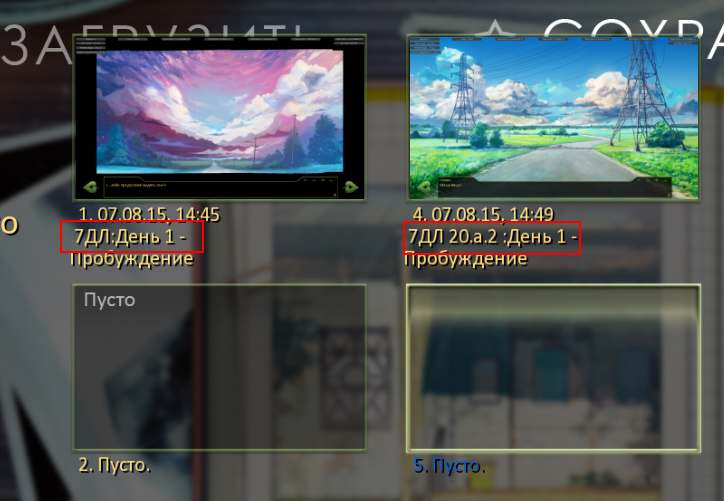
Алгоритм предполагается примерно таким:
- Если загружается классика или любой другой мод - скрипт этого "не заметит".
- Если загружено сохранение "7ДЛ" - проверяем версию сохранения.
- если релиз сохранения совпадает (или совместим) с релизом мода - также реакции не последует;
- если релиз сохранения не известен или неизвестно, совместим ли - предполагается игрока об этом предупредить (вывод окна) и дать выбор: перейти в меню загрузки, начать игру заново или продолжить на свой страх и риск?
- если релиз сохранения точно не будет совместим с релизом мода или (а вдруг? ) - релиз сохранения более поздний, чем релиз мода - выводится подобное окно - но без продолжения (выход в меню загрузки или начать игру заново).
Нужна ли такая функция в моде?
Если таки да, постараюсь в ближайшее время выложить "на попробовать".
- Осталось добавить:
1. Определиться с системой нумерации и совместимости релизов;
- пока 20.a.2 = релиз 20а, хотфикс 2;
- совместимость - вот тут вопрос - либо однозначный критерий в номере, либо - список совместимых релизов и проверяем по нему;
2. "Прикрутить" окна выбора вариантов и корректный выход на метки начала игры
- по окнам : предполагаемые действия - надо ли дать возможность продолжать игру, если неизвестно: совместима ли?
- стирать несовместимое сохранение - надо ли предлагать? (стереть это сохранение и начать игру заново)?
- что-то еще?

nuttyprof- Хикка

- Сообщения : 102
Дата регистрации : 2015-05-25
Возраст : 45
Откуда : Юг
Re: Технические вопросы и предложения
автор 7dl-kun в Пт 7 Авг 2015 - 18:06
1.
- Номерацию сведу к цифробуквенной, без хотфиксов.
- Критерий, полагаю, делаем в номере в виде какой-нибудь переменной - главное, мне самому не забывать её обновлять (=
2. Здесь по обоим пунктам соглашусь, при попытки загрузки оффдейт версии должно выводиться окошко с предупреждением:
• Внимание: ваша версия сохранения несовместима с этой версией игры! Продолжить на свой страх и риск? (да/нет)
• Если "да", выбор: начать сначала или продолжить с последней доступной точки
• Если "нет", выбор: стереть сохранение или нет
Вроде, всё.

7dl-kun- Находка для шпиона

- Сообщения : 3026
Дата регистрации : 2014-09-07
Откуда : здесь столько наркоманов?
Re: Технические вопросы и предложения
автор nuttyprof в Сб 8 Авг 2015 - 2:16
Причешу код и попробую на 21а версии.
Если загружается любое другое сохранение (не "7ДЛ"), или версии сохранения и мода совпадают, не происходит ничего.
Если загружается старое сохранение, то
- Выглядеть будет примерно так:
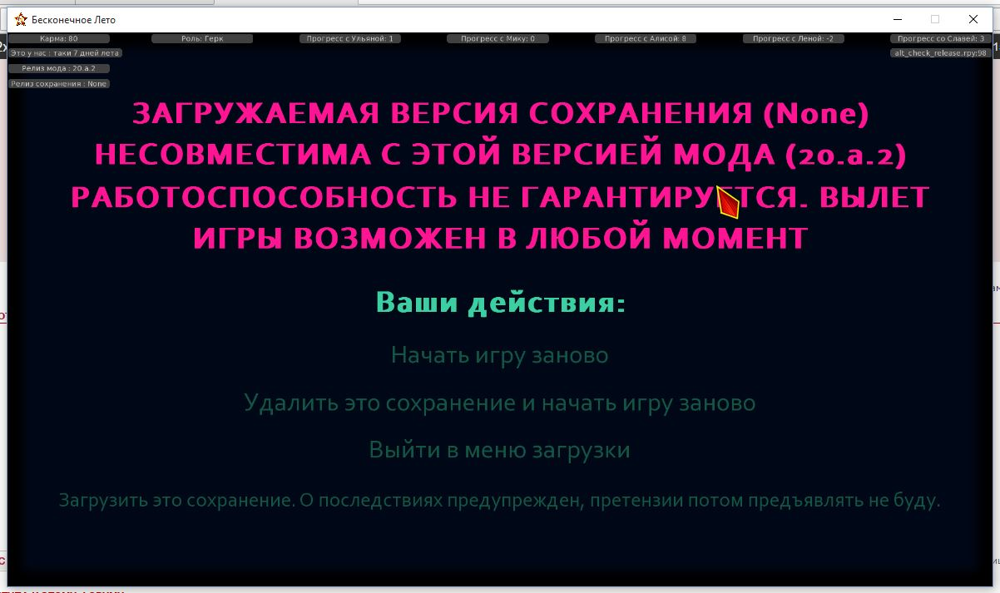
nuttyprof- Хикка
- Сообщения : 102
Дата регистрации : 2015-05-25
Возраст : 45
Откуда : Юг
Re: Технические вопросы и предложения
автор nuttyprof в Вс 9 Авг 2015 - 2:01
Выкладываю "на попробовать" относительно рабочий вариант проверки версии загружаемого сохранения.
Для БЛ версии 1.1, на основе релиза мода 0.21a
полная версия мода - https://yadi.sk/d/COllUga2iLtVU
только новые и заменяемые файлы (скопировать в папку мода с перезаписью) - https://yadi.sk/d/XSFDYg5GiLtWH
Традиционно - старые сохранения могут не работать, но они нужны для проверки.
- Что там есть:
1. В название файла сохраненной игры добавляется номер релиза мода.
2. При загрузке сохраненной игры проверяется:
- загружается ли сохранение "7ДЛ"
- проверяется версия сохраненной игры на совместимость с текущей версией мода.
3. Если загружается НЕ "7ДЛ" или версия сохранения совместима с версией мода - ничего не происходит, игра продолжается.
4. Если загружается старая или несовместимая версия "7ДЛ" - появляется экран с предупреждением и меню выбора:
- начать игру заново;
- стереть старое сохранение и затем начать игру заново;
- выйти в меню загрузки;
- попытаться всё-таки загрузить старое сохранение и поиграть.
5. При выходе новой версии нужно изменить номер версии и (при наличии таковых) записать номера совместимых версий в файл alt_release_number.rpy
КМК, должно пригодиться. особенно в стимоверсии.
- Не знаю, получится ли:
но планирую сделать возможность "отката" загружаемой несовместимой версии назад до некой точки. после которой возможно корректное продолжение загружаемой игры в новой версии.
nuttyprof- Хикка
- Сообщения : 102
Дата регистрации : 2015-05-25
Возраст : 45
Откуда : Юг
Re: Технические вопросы и предложения
автор 7dl-kun в Вс 9 Авг 2015 - 2:27
7dl-kun- Находка для шпиона
- Сообщения : 3026
Дата регистрации : 2014-09-07
Откуда : здесь столько наркоманов?
Re: Технические вопросы и предложения
автор openplace в Вс 9 Авг 2015 - 4:10
По поводу alt_check_release.rpy 0.21b:
- Код:
45 button: # сначала удаляем (без предварительного запроса), потом начинаем заново. РАБОТАЕТ НЕ НА ВСЕХ СОХРАНЕНИЯХ. Будем выяснять.
На данный момент определённо можно сказать, что вышеозначенная кнопка не будет работать на сохранениях, строчка которых в новом релизе знаменует собой начало нового дня/смену главы. Сохранение для убедиться: https://yadi.sk/d/nZHk326ZiLwMU Это Лена-ФЗ из 0.20a, 5-й день (точнее, то, что есть из него сейчас). На превьюшке виден выбор, как поступить в начале 5-го дня, но на самом деле при загрузке и выборе кнопки
- Код:
77 text u"Загрузить это сохранение. На свой страх и риск, о возможных последствиях предупрежден.":
https://yadi.sk/d/B8l5U0mSiLwRj - и ещё одно, почти совсем свежее, 0.21a-test, из архива, который выложил для попробовать nuttyprof. На превью будет выбор в медпункте, а на деле загрузится заставка начала 1-го альтернативного дня.

openplace- Хикка
- Сообщения : 111
Дата регистрации : 2015-05-02
Re: Технические вопросы и предложения
автор peregarrett в Ср 12 Авг 2015 - 1:58
Перекрашивание картинок на лету:
- Код:
init python:
def Noir(id):
return im.MatrixColor(ImageReference(id), im.matrix.brightness(-0.2) * im.matrix.tint(0.95, 0.2, 0.2) * im.matrix.saturation(-0.5))
label test__Noir_Effect:
scene ext_bus1
"А сейчас - "
"ЭФФЕКТ!!"
scene expression Noir("ext_bus1")
"Вот."
return
- Результат:
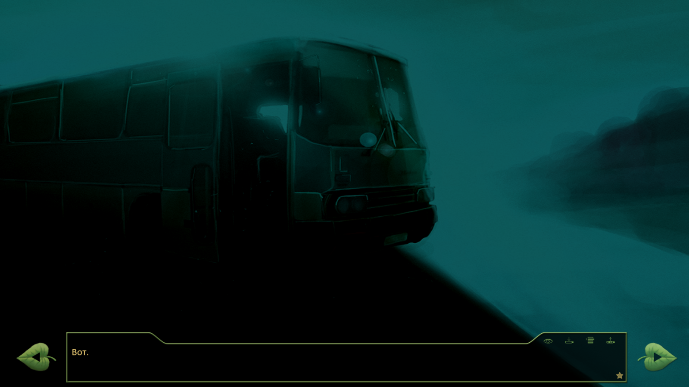

peregarrett- Находка для шпиона
- Сообщения : 3264
Дата регистрации : 2014-09-07
Возраст : 36
Re: Технические вопросы и предложения
автор nuttyprof в Ср 12 Авг 2015 - 2:42
- Код:
init python:
def Noir(id, brightness = -0.2, tint_r = 0.95, tint_g = 0.2, tint_b = 0.2, saturation = -0.5):
return im.MatrixColor(ImageReference(id), im.matrix.brightness(brightness) * im.matrix.tint(tint_r, tint_g, tint_b) * im.matrix.saturation(saturation))
а в коде, если нас в каком-то случае параметры "по умолчанию" не устраивают, при вызове процедуры этот параметр или параметры меняем (если устраивают "по умолчанию", можно ничего не указывать):
- Код:
scene expression Noir("ext_bus1") # параметры "по умолчанию"
...
scene expression Noir("ext_bus1", brightness = -0.3, tint_r = 0.7, tint_g = 0.4, tint_b = 0.3, saturation = -0.3) #меняем все параметры
....
scene expression Noir("ext_bus1", brightness = -0.3, saturation = -0.3) #меняем отдельные параметры
nuttyprof- Хикка
- Сообщения : 102
Дата регистрации : 2015-05-25
Возраст : 45
Откуда : Юг
Re: Технические вопросы и предложения
автор 7dl-kun в Ср 12 Авг 2015 - 3:16
- Спойлер:
- Код:
def Noir(id, brightness = -0.4, tint_r = 0.2126, tint_g = 0.7152, tint_b = 0.0722, saturation = -0.2):
return im.MatrixColor(ImageReference(id), im.matrix.brightness(brightness) * im.matrix.tint(tint_r, tint_g, tint_b) * im.matrix.saturation(saturation))
def SS_com(id):
return im.MatrixColor(ImageReference(id), im.matrix.brightness(-0.2) * im.matrix.contrast(1.6) * im.matrix.saturation(0)* im.matrix.colorize("#b00", "#000"))
- Нуар-версия (насыщенность 0.2, контраст 1.2, яркость 0.6"):
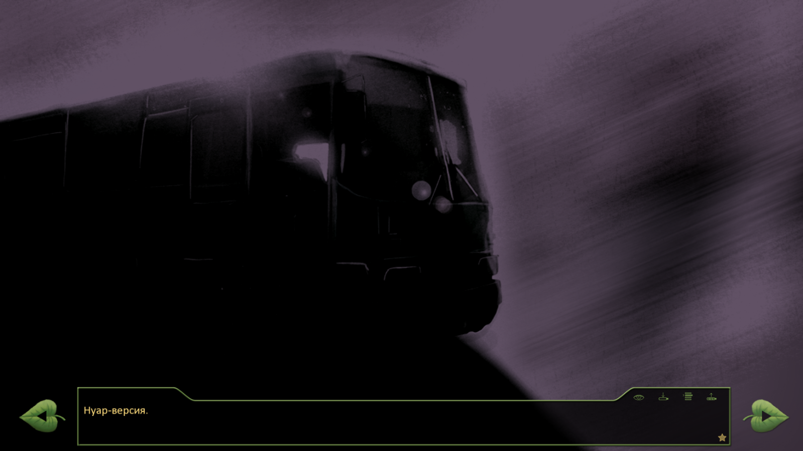
- Закос под Миллера (обесцвечен полностью, контраст 1.6, яркость 0.8, негативное колорирование):
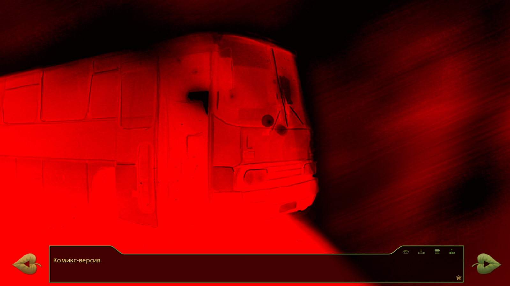
Идеально, конечно, было бы вычернить небо полностью, а красный совместить с белым как дополнительный цвет, но это если уж совсем с жиру беситьяс.
7dl-kun- Находка для шпиона
- Сообщения : 3026
Дата регистрации : 2014-09-07
Откуда : здесь столько наркоманов?
Re: Технические вопросы и предложения
автор openplace в Вс 16 Авг 2015 - 2:29
https://yadi.sk/d/QETyUMr2iU9N6
Написано для Illustrator 10, но вполне подходит для той версии, которая входит в Creative Suite 2. Сильно больших и критических отличий не найдено.
- Illustrator CS2:
http://download.adobe.com/pub/adobe/magic/creativesuite/CS2_EOL/ILST/AI_CS2_IE_NonRet.exe (625,35 Мб)
1034-1415-6230-2341-2884-9398
В 2014 это всё лежало по адресу http://www.adobe.com/downloads/cs2_downloads/index.html , теперь при заходе на сайт перенаправляет и требует авторизации. К счастью, прямых ссылок на файлы это не касается.
openplace- Хикка
- Сообщения : 111
Дата регистрации : 2015-05-02
Re: Технические вопросы и предложения
автор nuttyprof в Вт 1 Сен 2015 - 15:38
Возникло несколько вопросов по реализации рандомизатора карточного турнира, на которые сможет ответить только товарищ автор.
- рандомайзер вроде как заработал:
- раз картинка:
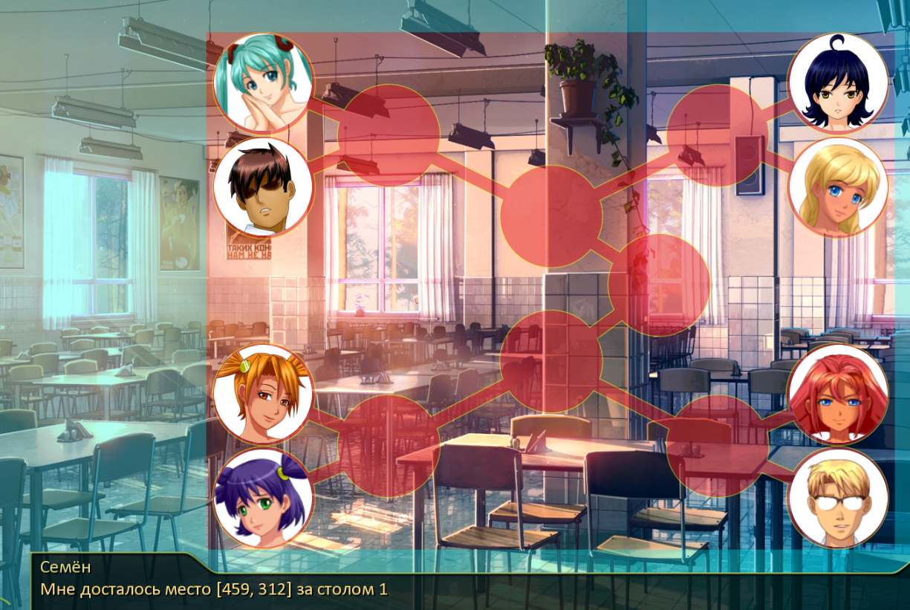
- два картинка:
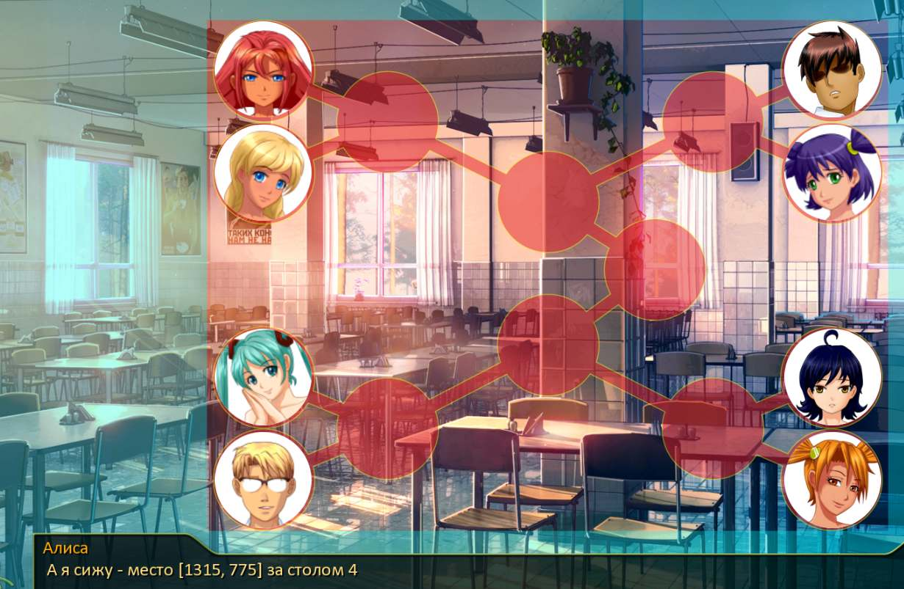
Уже каждый пионер (точнее, обработчик) знает, кто куда попал и с кем свел его рандом.- Спойлер:
"Склонять" места, столы, финалы и полуфиналы, покерные комбинации и т. п. игроков обучу, в процессе.
Планируется при победе/поражении выводить нечто вроде:
"Против моего %(стрита) %(Алисины) %(две пары) не играют"
"Шансы были почти равны - у нас обоих было %(по паре), но у %(Лены) карты старше моих"
- вопросы по реализации вывода турнирной таблицы:
1. Нужно ли показывать таблицу с первоначальной рассадкой игроков (до того момента, как вмешивается ОД?)
- в данный момент не показывается.
2. Правильно ли я понял диспозицию (номера столов):- Спойлер:
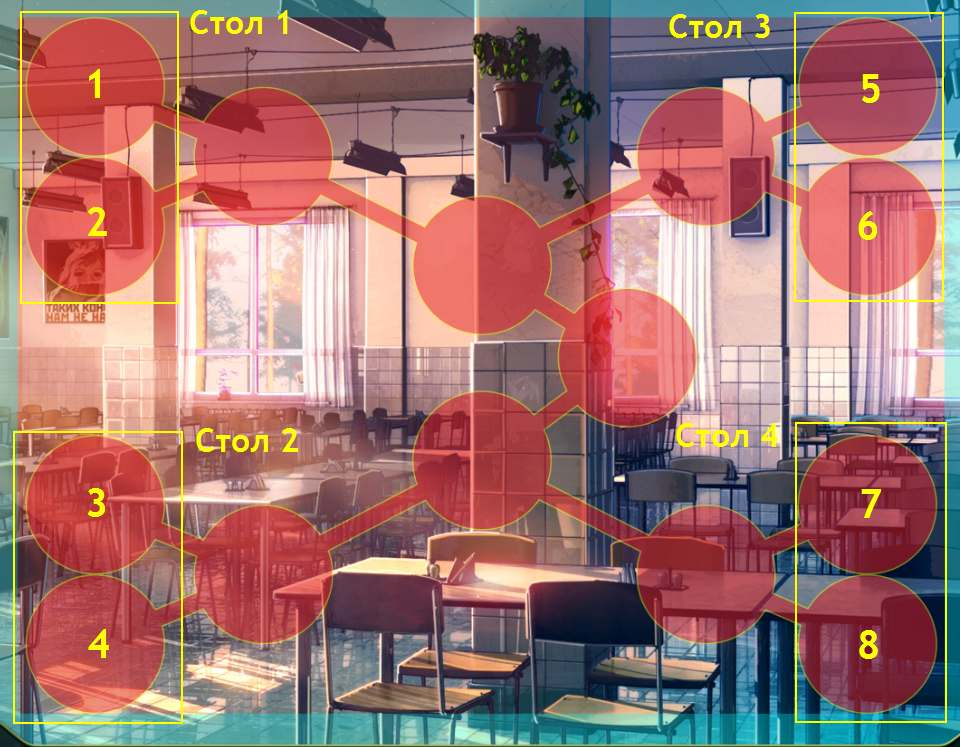
3. Сейчас Семён оказывается за четвертым столом, и описание рассадки начинает со своего стола, потом: 1, 2, 3.
При полном рандоме: Семён также должен начинать со своего стола а потом как: по часовой стрелке или по порядку, пропуская свой?
4. Сейчас при описании рассадки за очередным столом игрок, сидящий на нечетном месте, просто называется:- Спойлер:
- Код:
...
"Следующий стол принадлежал "
if alt_player3 == 1:
show un_playon:
pos (459,620)
with dissolve
extend " Лене"
...
а его соперника представляем несколько полнее:- Спойлер:
- Код:
...
elif alt_player4 == 5:
show us_playon:
pos (459,775)
with dissolve
extend " и Ульяне."
"Мелкая была занята запугиванием оппонента."
...
Имеет ли значение порядок представления игроков за каждым столом (сверху вниз) или это отдать на волю рандома?
5. Сейчас после раунда турнирная таблица очищается:- после первого тура:
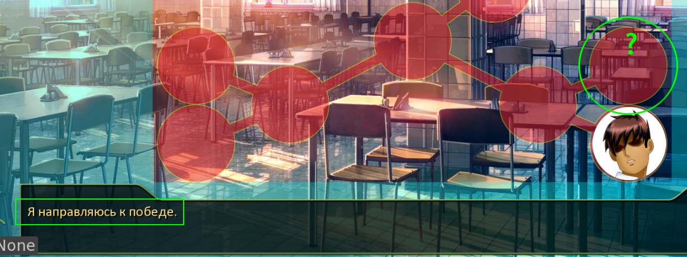
- после полуфинала:
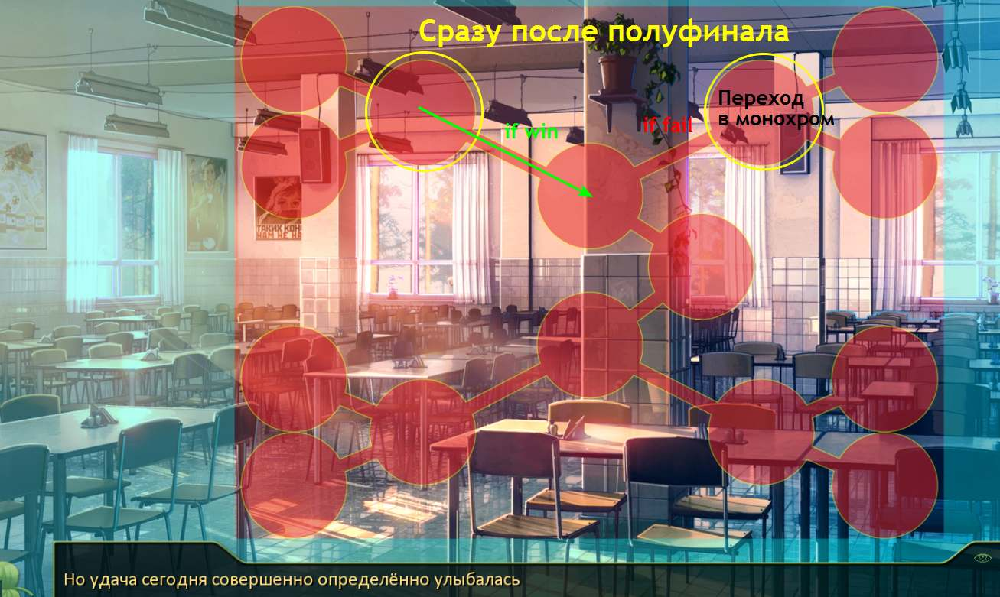
Потом по одной выводятся фишки - исчезают на старом месте и появляются на новом.- Не логичнее бы было:
- фишку победителя не скрывать/показывать - а двигать на новое место;
- фишку проигравшего игрока и фишку победителя на старом месте монохромить.
Естественно, с параллельными комментариями.
Или - оставить, как есть?
nuttyprof- Хикка
- Сообщения : 102
Дата регистрации : 2015-05-25
Возраст : 45
Откуда : Юг
Re: Технические вопросы и предложения
автор 7dl-kun в Вт 1 Сен 2015 - 16:59
1. Нет, вывод стартового пула не нужен, так как сам шаффл начинается как раз с реплики Ольги.
2. Всё верно, слева направо, сверху вниз: 1-2-3-4, полуфинал 1 против 3, 2 против 4.
3. Если идти в фул рандом, то оглашение стандартное: в порядке номерации с указанием, если мы где-то сидим по дороге:
- Спойлер:
Итак, первый стол
если игрок 1 Ульяна и игрок 2 Алиса:
застолбили рыжие.
если игрок один Лена:
Лена
если игрок два Шурик:
И Шурик.
За вторым столом
Если игрок 3 Мику
разместилась Мику
Если игрок 4 мы
и ваш покорный слуга
4. Порядок представления значения не имеет, более того, здесь в ТЗ хотелось бы внести дополнение: дать каждому игроку собственное представление-таунт, которое будет вызываться из своего словаря.
- Спойлер:
Что-то вроде.
Против неё играла Алиса.
call alisa_entrance_taunt
label alisa_entrance_taunt:
Присваиваем alt_taunt значение с ГСЧ
Если alt_taunt == 1:
"Она смотрела на соперника как на пустое место. Уууу, злюка!"
Если alt_taunt == 2:
"Если у кого и есть больше шансов на победу, так это у неё. Наглая как танк! А наглость - второе счастье.
Если alt_taunt == 3:
...
5. Не логичнее? Логичнее. Если есть возможность двигать победителя и монохромить проигравшего - буду только за.
7dl-kun- Находка для шпиона
- Сообщения : 3026
Дата регистрации : 2014-09-07
Откуда : здесь столько наркоманов?
Re: Технические вопросы и предложения
автор nuttyprof в Чт 3 Сен 2015 - 13:52
К товарищу автору:
- По турниру - уточнения:
1. Будет ли приемлемо:
- собрать параметры спрайтов персонажей, диалогов и т. п. где-то в одном месте под init'ом- например, так:
- Код:
# спрайты - Семён узнает соперника
alt_sprites_rival_recognition = { #['эмоция', 'одежда', положение]
"un": ['shy', 'pioneer', cright],
"sl": ['smile2', 'pioneer', cright],
"dv": ['grin', 'pioneer2', cright],
"mi": ['smile', 'pioneer', cright],
"us": ['laugh', 'pioneer', cright],
"sh": ['normal', 'pioneer', cright],
"mz": ['normal', 'pioneer', cright]
}
# спрайты - победа в 1 туре
.....
и т. д.
И если таки да - как лучше сгруппировать:
(свои (+) и (-) у каждого способа
- по событиям (пример выше), несколько удобнее в вызове потом
- по персонажам- или так:
- Код:
....
# спрайты - Двачевская
alt_sprites_rival_dv = { #['эмоция', 'одежда', положение]
"recognition": ['grin', 'pioneer2', cright], #узнавание соперника перед турниром
"winner_1_tour": ['smile', 'pioneer2', ??], # победила в 1 туре
"loser_1_tour": ['sad', 'pioneer2', ??], # проиграла в 1 туре
.... и т. д
2. Во время показа турнирной таблицы при представлении ситуации за столами
надо ли показывать по бокам от таблицы спрайты игроков (стол заслоняться не будет)- например:
- Код:
....
"%(table_no)s стол заняли: %(gambler_1)s" # "Первый стол заняли: Лена" (например)
# показываем фишку Лены на столе
??? # показываем спрайт Лены слева от стола ????
???(1)# в текстовом окне - таунт Лены к Славе (второй игрок программе уже известен)
extend "и %(gambler_2)s" # " и Славя" (например)
# показываем фишку Слави на столе
??? # показываем спрайт Слави справа от стола ????
???(2)# в текстовом окне - таунт Слави к Лене
таунты выводить как:
- (1) и (2) - как в примере;
- после представления игроков (1) и (2) вместе;
- только таунт (2) - как сейчас.
3. Уникальные описания столов - пока вижу только 2:
- за столом Алиса и Ульяна = "ххх стол застолбили рыжие";
- за столом Семён и Шурик = "за ххх столом сложилась чисто мужская компания".
Для других сочетаний - будет ли нечто подобное?
4. Возможность матч-реванша:
- только тем и тогда, как это уже реализовано сейчас;
- с любым игроком в любом этапе (с возможной раздачей плюшек и подзатыльников для каждой ситуации)- ну и с диалогами:
Все чуть сложнее.
Те, что формализации поддаются (те же таунты) - можно передать в функции - тогда для вызова две строчки всего:
%(первый_игрок) "%(говорит это)" (если текст "от автора" - %(первый_игрок) - опускается)
%(второй_игрок) "%(говорит это)"
А вот если формализация займет больше места, чем перебор по if...elif
(разные структуры диалогов, разное количество и порядок высказываний)
думаю, есть смысл оставить их как были - в блоках if...elif
nuttyprof- Хикка
- Сообщения : 102
Дата регистрации : 2015-05-25
Возраст : 45
Откуда : Юг
Re: Технические вопросы и предложения
автор 7dl-kun в Чт 3 Сен 2015 - 14:21
- Спойлер:
- Привет.
1. Группировка? Почему бы и нет? Если от неё есть прок, то пожалуйста. Принцип группировки, наверное, лучше второй, по персонажам, чтобы вносить изменения сразу в блок персонажей если что.
2. Спрайты лучше не показывать. Во-первых, это требует унификации стиля спрайтов, чтобы они смотрели в центр, а это далеко не всегда возможно, а во-вторых, нас на самом деле интересует только мой оппонент в каждой партии.
3. Уникальные описания лучше вынести отдельным словарём, я потом там пошаманю. Потому что навскидку прямо отсюда вижу ещё парочку вариантов - аллюзию на оригинал "Ульянка тут же зашептала что-то Шурику на ухо, я успел расслышать что-то вроде «вступлю в клуб»." и " Лена х Алиса "Алиса подмигнула, а Лена, как у крыльца, съёжилась и попыталась спрятаться под стол." Потом обязательно что-нибудь ещё вспомнится, турнир должен демонстрировать отношения между игроками.
4. Реванши - да, только для Ульянки и Лены. Это сюжетно обосновано, всем остальным подавай челлендж.
Диалоги:
Формализации требуют как раз интро каждого игрока, потому что если писать всё ифами, получится ненужное повторение строк.
То есть, скорее всего, это должно выглядеть так:
1. Представляем первого игрока.
2. Вызываем его таунт
3. Представляем второго игрока.
4. Тут не знаю, либо вызываем таунт второго игрока, либо сразу вызываем уникальное парное описание.
7dl-kun- Находка для шпиона
- Сообщения : 3026
Дата регистрации : 2014-09-07
Откуда : здесь столько наркоманов?
Re: Технические вопросы и предложения
автор nuttyprof в Пн 14 Сен 2015 - 20:19
- С турниром что-то начинает получаться:
С турниром вроде получилось, рандом - рандомит, (вначале казалось - совпадений многовато, но на большом числе запусков - (от ~ 10k, выбор циклил, писал таблицы и анализировал потом - оказалось равномерно), так что если и покажется, что именно этот соперник попадается часто - это действительно рандом.
Кого куда надо - пересаживает по таблице;
С цифрами - все нормально, т. е. "За 1 столом.... ", и т. п.
Единственно что осталось - научить функцию правильно склонять\спрягать, а то иногда выдаёт периодически не то, что нужно, вроде "Мне рандом послал Алиса" и т. п.
nuttyprof- Хикка
- Сообщения : 102
Дата регистрации : 2015-05-25
Возраст : 45
Откуда : Юг
Re: Технические вопросы и предложения
автор nuttyprof в Пн 28 Сен 2015 - 21:28
Кажись, домучил я и турнир второго дня, и покер в турнире тоже.
Для БЛ версии 1.1, релиз мода - любой (турнир тестовый, с модом, теоретически, вообще пересекаться не должен); откатывалось на основе 022.b. На 023.d прогонял сегодня пару десятков раз, вылетов и сбоев не зафиксировано.
Скачать можно тут: https://yadi.sk/d/14jGW-6wjNwac
- Что в архиве:
В архиве одна папка ~Test с четырьмя файлами. Её распаковать и поместить в папку мода (scenario_alt).
Версия турнира - тестовая, требует доработки; для релиза нужно будет:
- выбросить тестовую отсебятину (гонял турнир и покер взад, вперёд и по кругу); для теста эти выборы и повторы оставил, в релизе они явно будут лишними.
(такое как: повторная жеребьёвка, бесконечные раванши с одним и тем же соперником и т. п.) Дабы потом меньше искать, в коде отсебятину выделял.
- переименовать некоторые переменные, пересекающиеся с модом (в тесте добавлены суффиксы "_test";
- некоторые функции также будут переработаны, для релиза таких "крокодилов" не потребуется, думаю.
Текстовая часть - практически полностью авторская, кое-что добавлено для логических связок, например: ( ПРОВЕРКА ОБЩЕГО СЛОВАРЯ. Шурик выиграл у Ульяны. ).
Возможно, кое-где в переходах между блоками текста будут несостыковки; движок всего лишь позволяет что-то сказать тому или иному персонажу по какому-либо поводу (кто с кем попал за стол, кто у кого выиграл и на каком этапе и т. п), а вот что именно сказать - тут уж прерогатива товарища автора.
Да, так как у нас тут покер, нужно было как-то обозвать масти наших карт. Я просто названия этих мастей нигде не встречал; честно говоря, особо тщательно не искал, но и на слуху не попадалось. Если что не так - переименовать несложно.
То же касается названий покерных комбинаций.
Хотя и гонялось это всё достаточно долго, логические жуки-пауки вроде повыловлены, тем не менее, свой глаз "замыливается", потому товарищей и господ тестеров
прошу погонять турнир, как можно интенсивно, на предмет обнаружения логических нестыковок.
- Например:
- Соответствие показываемых спрайтов и фишек на таблице и называемых имён (например, Лену показываем, говорим: "Ульяна");
- Соответствие победителей и проигравших (правильно называем, правильно сажаем за столы, правильно пересаживаемся);
- Поскольку используются покерные комбинации - правильность их распознавания, сравнения старшинства, названий карт, мастей и т. д. и выделения в конце,
чтобы не получилось, например, так: названо правильно, старшинство - правильно, карты/масти правильно, а выделено - только по четыре карты.- Неправильно выделена комбинация:
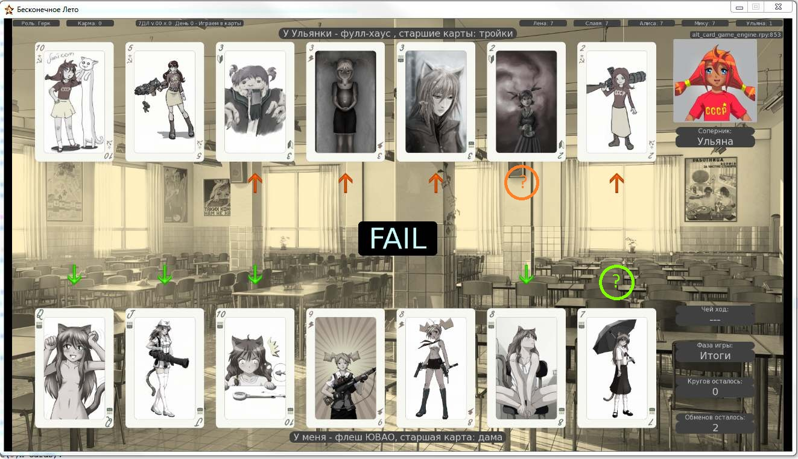
Кстати, это покер на семи картах (да, можно и по семь сдавать)
Это основное; если же ещё что-либо неправильного обнаружится по логике, построению, работе функций - прошу всё это в эту тему.
- Что там ещё есть:
1. Помимо флагов побед в этапах турнира (и чека по ним) - флаги побед над соперниками (и чеки по этому параметру). То есть: если у Шурика не выигрывали ещё - с ним нужно либо играть, либо сдаваться (быстрое поражение). Быстрая победа - только после успешной игры с ним.
2. Программа "помнит", кто и как отыграл очередной турнир - и эти данные можно добыть в других днях по необходимости; вроде были ссылки на результат турнира у той же Лены в руте.
Более того, (правда, не знаю, зачем это может пригодиться) ведется статистика и выводится некий "рейтинг". Т. е. "Сегодня %(пионер) сыграл %(вот так), а обычно он играет %(вот эдак).
3. Полностью рандомная рассадка, выбор игры на шести или семи картах, выбор очерёдности хода.
4. Есть режим "Хочу почувствовать себя %(пионером)". Попробуйте. Да, не удивляйтесь, они именно так и играют, с точки зрения обработчика.
А потому - в планах пока - научить (хотя бы Алиску) не кидаться картами, а играть в покер.
Идеи есть, как, реализация начата, но. Я в покер, холдемы и т. п. не игрец, я больше по преферансу.
Огромная просьба заинтересованным и опытным товарищам - какова бы была ваша логика игры, если бы напротив Семёна за столом сидели именно вы?
Исходные данные:
- программа знает, что именно оказалось на руках соперника и как меняется ситуация после своего и чужого хода;
- программа "понимает", что Семён полез за "нужной" картой;
- программа помнит "свою" карту, вынутую Семёном, и может её отследить и забрать обратно;
- программа может выбрать "ненужную" карту для обмена, и может её отдать "сразу", не перетасовывая,
- программа может отследить, что Семён пытается вернуть именно эту вынутую у него карту - и делает вывод, что, скорее всего, разбита исходная комбинация и Семён пытается её восстановить.
А вот с логикой обработки исходных - пока не очень.
(подразумевается, что соперник карт Семёна не видит, хотя Ульянку обучу мухлевать )
)
Что приоритетнее - спасать свою комбинацию или пытаться разбить комбинацию Семёна?
Как распознать, что у Семёна точно что-то нужное выхвачено, и не отдавать обратно?
В общем,самимынеместные,помогите, кто чем может.
nuttyprof- Хикка
- Сообщения : 102
Дата регистрации : 2015-05-25
Возраст : 45
Откуда : Юг
Re: Технические вопросы и предложения
автор Dantiras в Пн 28 Сен 2015 - 23:01
Небольшое общее (не особо существенное) нарекание: при жеребьёвке 1/4 финала происходит оглашение пар оппонентов, в т.ч. пары нашего ГГ. По тексту всё выходит логично, но де-факто происходит дубляж информации.
- примеры:
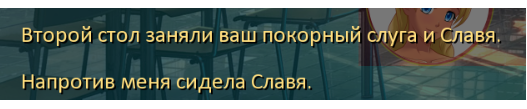

Теперь о странности. При ролле полуфинала наткнулся на Ульянку, но самого матча не произошло - спрайт Ульянки пропал как при запуске матча, но запуска игры не случилось. Текст приведён ниже (как видно, выбор режима игры также не воспроизводился).
- СКРИН с воспроизведёными строками:


Dantiras- Мизантроп

- Сообщения : 615
Дата регистрации : 2015-08-17
Re: Технические вопросы и предложения
автор 7dl-kun в Пн 28 Сен 2015 - 23:43
7dl-kun- Находка для шпиона
- Сообщения : 3026
Дата регистрации : 2014-09-07
Откуда : здесь столько наркоманов?
Re: Технические вопросы и предложения
автор Dantiras в Пн 28 Сен 2015 - 23:50
С этим там всё просто великолепно. На самом деле, если бы не тот незапустившийся матч, то можно было бы по движку сказать, что всё идеально. Строки в анализаторе воспроизводятся правильно, зависимости порядка текста от турнирной сетки персонажей (той ошибки, что я выкладывал вчера) здесь нет.7dl-kun пишет:Главное, чтобы не было смещений в жеребьёвке и выдаче результатов, как это было у меня.
Немного подразукрасить диалоги с повествованием и будет прекрасный "пасьянсик".
Dantiras- Мизантроп
- Сообщения : 615
Дата регистрации : 2015-08-17
Re: Технические вопросы и предложения
автор nuttyprof в Вт 29 Сен 2015 - 0:35
Dantiras пишет:
Небольшое общее (не особо существенное) нарекание: при жеребьёвке 1/4 финала происходит оглашение пар оппонентов, в т.ч. пары нашего ГГ. По тексту всё выходит логично, но де-факто происходит дубляж информации.
КМК здесь стоит изменить текст с описания того, кто именно занял место напротив ГГ, на какие-нибудь более разнообразные строки. Например, вместо "... на меня зыркала нелюдимая библиотекарша" использовать что-то вроде "Библиотекарша одарила меня очередным испепеляющим взглядом". И про оппонента сказали, и дубляжа информации не получилось.
Да. есть такое. Там фразы собираются из нескольких словарей, некоторые рандомно притом - т. е. если даже и попадется одинаковый расклад по игрокам - фразы будут разные + специально для персонажа конкретного что-то.
Тут автору работа, я и лезть не пытался, бо шедевры моего творчества в литературном жанре - это "Инструкция по эксплуатации и техническому обслуживанию системы ПАЗ и технологического регулирования %(марка оборудования)"; не совсем то, что нужно для ВН.
Dantiras пишет:
Теперь о странности. При ролле полуфинала наткнулся на Ульянку, но самого матча не произошло - спрайт Ульянки пропал как при запуске матча, но запуска игры не случилось. Текст приведён ниже (как видно, выбор режима игры также не воспроизводился).
Пока такой случай отловил только у неё и только на этой стадии.
Если идёт пропуск первого тура и полуфинала на финал - часть диалогов обрезается для экономии времени (тестовый режим) - только начало остаётся (скорее всего, и вывод спрайта прихватил); в релизе можно вывести полностью. Да и, ЕМНИМС. при транзите со старта на финал полуфинал тоже обходится. Если я правильно понял, если Сёма продувает в первом туре - он уходит в некоторых случаях, после проигрыша в реваншах - точно уходит, сказано прямым текстом; потому - что дальше происходит - того может не видеть, а вот после проигрыша в 1/2 - что-то вроде "я занял место среди болельщиков".
Это всё настраивается включением\выключением обходов; - рандомизатор там работает, и рассадит, кого куда надо, и результат нарандомит.
Последний раз редактировалось: nuttyprof (Вт 29 Сен 2015 - 0:40), всего редактировалось 1 раз(а)
nuttyprof- Хикка
- Сообщения : 102
Дата регистрации : 2015-05-25
Возраст : 45
Откуда : Юг
Re: Технические вопросы и предложения
автор Dantiras в Вт 29 Сен 2015 - 0:40
Разобрался, спасибо. Только прочитав, вспомнил, что меня первоначально завернули с попытки выбора "проиграть в полуфинале" перед четвертьфинальной игрой. Пришлось сыграть матч, но я не подозревал, что факт моего выбора сохраняется. Больше нареканий по механике не обнаружил.nuttyprof пишет:Если идёт пропуск первого тура и полуфинала на финал - часть диалогов обрезается для экономии времени (тестовый режим) - только начало остаётся (скорее всего, и вывод спрайта прихватил); в релизе можно вывести полностью. Да и, ЕМНИМС. при транзите со старта на финал полуфинал тоже обходится. Если я правильно понял, если Сёма продувает в первом туре - он уходит, после реваншей - так точно, потому - что дальше может не видеть, а вот после проигрыша в 1/2 - что-то вроде "я занял место среди болельщиков".
Это всё настраивается включением\выключением обходов; - рандомизатор там работает, и рассадит, кого куда надо, и результат нарандомит.
Dantiras- Мизантроп
- Сообщения : 615
Дата регистрации : 2015-08-17
Re: Технические вопросы и предложения
автор nuttyprof в Вт 29 Сен 2015 - 0:52
У кого возможность есть - погоняйте на разных платформах (Win 7, 8, 10), Мак, и .д.
Потому - откатывал на машине с Win7 проф (рабочий ноут, промышленная версия) - две недели всё нормально.
Вотпрямщас катаю на планшете с (нехорошее слово) Win 10 - рассадка финала слетает через раз - "не найден индекс в списке"... Обратно то же на семёрку - всё нормально.
Чудеса....
nuttyprof- Хикка
- Сообщения : 102
Дата регистрации : 2015-05-25
Возраст : 45
Откуда : Юг
Re: Технические вопросы и предложения
автор Элдхэнн в Вт 29 Сен 2015 - 1:16
QTE was merely a set back!nuttyprof пишет:Вечер в хату.
- программа знает, что именно оказалось на руках соперника и как меняется ситуация после своего и чужого хода;
- программа "понимает", что Семён полез за "нужной" картой;
- программа помнит "свою" карту, вынутую Семёном, и может её отследить и забрать обратно;
- программа может выбрать "ненужную" карту для обмена, и может её отдать "сразу", не перетасовывая,
- программа может отследить, что Семён пытается вернуть именно эту вынутую у него карту - и делает вывод, что, скорее всего, разбита исходная комбинация и Семён пытается её восстановить.[/i]

Элдхэнн- Людовед

- Сообщения : 1002
Дата регистрации : 2015-03-30
Возраст : 38
Откуда : Москва
Re: Технические вопросы и предложения
автор Dantiras в Ср 30 Сен 2015 - 3:05
Её суть заключается в отсутствии анимации первого обмена карт при условии, что оппонент ходит первым. Для семикарточный игры этот фактор немаловажный, поскольку перестаёшь понимать где именно находится только что вытащенная у тебя карта. То же самое характерно и для шестикарточной игры при условии, что оппонент ходит первым
Пример первого обмена карт №1. Условие: Шурик ходит первым. Игра в 6 карт.
Пример первого обмена карт №2. Условие: Шурик ходит первым. Игра в 7 карт.
Важно отметить, что в первой игре на турнире, где объясняются принципы семикарточной игры, проблемы нет, и анимация обмена работает как и должна. Абсолютно нормально работает анимация и остальных обменов по ходу матча кроме рассматриваемого случая.
Если это возможно, то стоит добавить анимацию в первый обмен карт при условии, что оппонент ходит первым, а также (если это опять-таки возможно) показывать стрелкой какую именно карту противник собирается предоставить нам при будущем обмене в семикарточном режиме.
Dantiras- Мизантроп
- Сообщения : 615
Дата регистрации : 2015-08-17
Re: Технические вопросы и предложения
автор nuttyprof в Ср 30 Сен 2015 - 8:46
Принято, посмотрю что там такое.
В первом случае обмен был произведён по условию "отказ от защиты" - я правильно понял?
- Спойлер:
Этот кусок кода - перемещение и обмен карт - я вообще не трогал; они как были в оригинальном движке - так и тянутся оттуда; по идее - время перемещения ненулевое (строго говоря, оно зависит от расстояния между перемещаемыми картами, т. к. задаётся скорость перемещения, а она - постоянна; время же - вычисляется и передаётся в функции перемещения карт).
Теоретически, использование неоригинальных функций обработки карточного стола могло повлиять и на перемещения - проверю и это.
"Маркировка" отдаваемой карты на семикарточном раскладе - вроде бы должна быть, проверю это.
Может быть ещё - что нет задержки между "маркировкой" и "передачей" - т. е. стрелка появляется (она всегда появляется под/над "маркированной" картой, но "увидеть" её мы просто не успеваем - если что, добавлю задержку туда.
Да, выловил у себя косячок в коде обработки результата.
- Спойлер:
На "своём" первом ходе и семикарточном раскладе при подведении итогов могли "маркироваться" не все карты комбинации;
при том, что комбинация распознаётся и называется верно.
Погоняю ещё сегодня, может эти баги там не последние; фикс тогда чуть позже выложу.
- По 'почти умным' соперникам:
"Защищать" свои карты они уже обучены:
- если заинтересовавшая вас карта входит в комбинацию - он вместо неё вам подсунет ненужную;
- если заинтересовавшая вас карта не в комбинации - он "подумает" и либо отдаст её сразу (т. е. "тасовать" карты не будет; аналог кнопки "отказ от защиты); либо "поменяет" - но также на ненужную ему карту.
С остальными функциями пока работа идёт - не всё и не всегда получается так, как хотелось бы.
UPD
С отсутствием анимации в первом круге обменов на первом ходу соперника разобрался (хотя странно, почему это вообще возникало, цепочки вызова функций аналогичны в первом и во втором круге).
nuttyprof- Хикка
- Сообщения : 102
Дата регистрации : 2015-05-25
Возраст : 45
Откуда : Юг
Страница 1 из 3 • 1, 2, 3